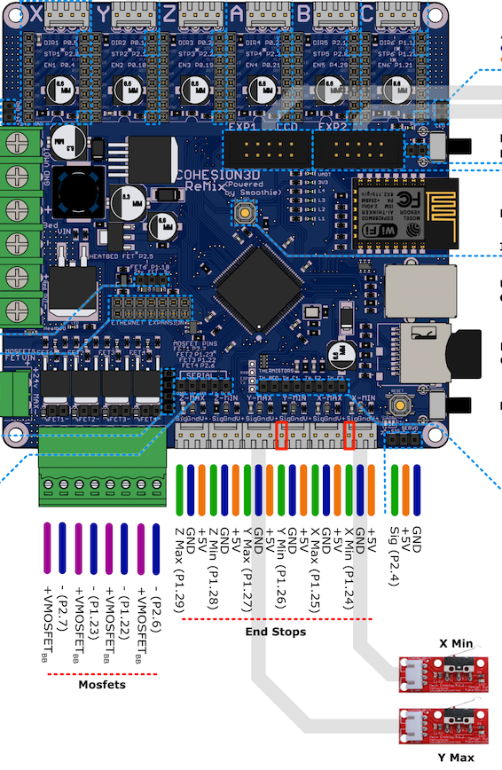

Cohesion3d 主板使用 TMC2130 以及 Marlin2.0 实现无传感器归零
文章目录
自从娃出生以来，一直没有时间，今天算是忙里偷闲，开始研究如何在 Cohesion3d-Remix 这块主控板上实现「无传感器归零」（sensorless homing)。所谓无传感器归零功能，使用的是 TMC2130 步进驱动的智能控制功能，可以根据步进电机失速的表现来对电机所处的状态进行分析。1
固件设置
- 将 X, Y 方向的归零回弹 (home_bump) 设为 0
#define X_HOME_BUMP_MM 0
#define Y_HOME_BUMP_MM 0
- 开启 Sensorless_homing
#define SENSORLESS_HOMING // TMC2130 only
注意到后面有固件默认的归零敏感度：
#if ENABLED(SENSORLESS_HOMING) || ENABLED(SENSORLESS_PROBING)
#define X_STALL_SENSITIVITY 8
#define Y_STALL_SENSITIVITY 8
//#define Z_STALL_SENSITIVITY 8
#endif
将来可以使用 M914 X/Y/Z 去实时调整这个敏感度，不必再使用固件调整。
- 在 configuration.h 文件中找到 X_MIN_ENDSTOP , 将其设置为 true, Y 也同理
// Mechanical endstop with COM to ground and NC to Signal uses "false" here (most common setup).
#define X_MIN_ENDSTOP_INVERTING true // set to true to invert the logic of the endstop.
#define Y_MIN_ENDSTOP_INVERTING true // set to true to invert the logic of the endstop.
硬件部分的改变
- 将 TMC2130 上的 Diag1 pin 与 C3D 板子上的限位开关 signal pin 连起来。我这里使用的是 X_MIN_ENDSTOP 和 Y_MIN_ENDSTOP，C3D 上的 pin 的位置见下图
上传固件
这一步是显然的。
上电测试
- 使用 G28 X, G28 Y 可以让 X, Y 轴单独归零，输入后观察归零情况。若撞到边框还不停止，则要调整归零灵敏度（使用 M914 命令）。在我这里的情况是 X 轴 归零正常，Y 轴没有归零就停住了。
- M914 命令的使用方法是：若只输入 M914，则显示当前灵敏度，marlin 规定的灵敏度范围是从 -63 到 64，数值越大越不敏感；初始时的灵敏度应该都为 0;
- 我将 X Y 方向的灵敏度设置为 1: M914 X1 Y1; 发现 Y 轴可以正常归零了。
- 最后记得用 M500 保存设置。
- 不知是否是因为 CoreXY 的 X, Y 方向是联合控制的，我这里独立归零没有问题，但当 X 和 Y 同时归零时，似乎只有 X 归零了，Y 并不归零，看来还需要进一步研究固件，加以调整。
更新
- 可以在 Configuration.h 里面激活如下命令以记录运行时系统反馈的信息：
#define DEBUG_LEVELING_FEATURE
使用 M111 S32 或 M111 S247 使系统信息能够被最大程度的记录下来
使用 G28 归零。
更新 （二）
经调试，发现主要问题是：当 X Y 同时归零时，总是 X 可以归零，但 Y 在归零途中就会停下；如果分别归零，当 Y 归零后，X 可以顺利归零；反之则不行。量了一下 X 导轨与前边框的间距，发现左侧比右侧稍大。左侧是归零方向。以此判断，不能实现同时归零的原因是线性导轨与框架不完全平行，导致 X 方向归零后， Y 在归零途中撞到框架而提前归零。
由于调节导轨平行度工作量实在太大，无奈之下，只好先在固件 Configuration_adv.h 中设置归零顺序为先 Y 再 X
#define HOME_Y_BEFORE_X
临时解决问题。
- 本文参考了 YouTube 视频：TMC2130 Guide - stepper motors driver upgrades part 3 - Sensorless homing https://www.youtube.com/watch?v=OUadiW5QLBE [return]
文章作者 XL
上次更新 2019-04-20